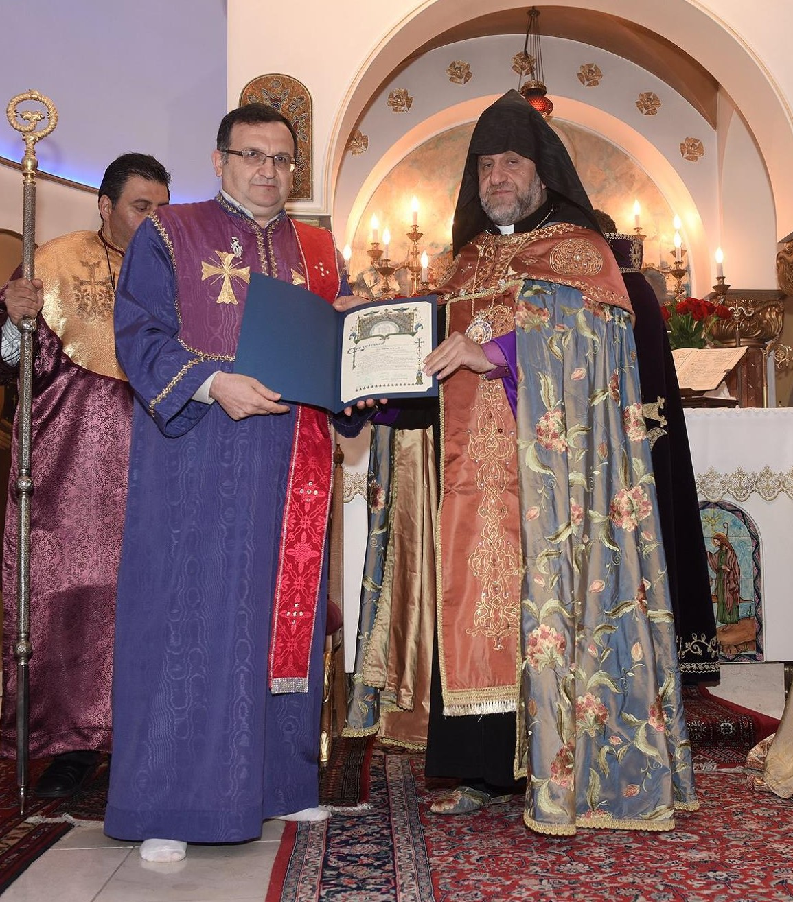

Զրոյց՝ Կիրակնօրեայ Դպրոցի Տնօրէնին հետ
Պրն. Թորոս Պապիկեան (ձախին)
Ահա 41 տարի է, որ Ս. Յակոբի Կիրակնօրեան կը ծառայէ։ Անցեալ տարեշրջանի կէսէն ասդին, քորոնա ժահռի կացութեան մէջ՝ ի՞նչ կ՚ընէ Կիրակնօրեան։
Ինչպէս գիտէք, 41 տարիներէ ի վեր Կիրակնօրեայի տարեկան ծրագիրը կը սկսի Խաչվերացի տօնին Կիրակի օրը, իսկ աւարտին կը հասնի՝ Մայիսի նախավերջին Կիրակի օրը, 33-34 դասընթացքներով։ Դժբախտաբար, անցեալ տարեշրջանին այդպէս չընթացաւ կարգը։ Գորոնայի պատճառով, վերջին անգամ ֆիզիքապէս Մարտի 8-ին ներկայ եղանք։
2020-ին Կիրակնօրեայ դպրոցի 40 ամեակը պիտի լրանար։ Այդ իսկ պատճառով, եկեղեցւոյ հովիւին՝ Արժ. Տ. Գառնիկ Աւ․ Քհնյ. Գոյունեանի հետ համաձայնած էինք, որ Կիրակնօրեայի աշակերտներ մասնակցին տօնական օրերու ծիսական կարգերուն. օրինակ՝ մեր աշակերտները պիտի կարդային Ս. Զատկուայ Ճրագալոյցի (2020) արարողութիւններու Ս. Գրային հատուածները, նաեւ Աւագ Հինգշաբթիի Ոտնուայի արարողութեան՝ նախատեսուած էր մեր աշակերտներու ոտքերուն լուացումը։ Երբ կառավարութիւնը արգիլեց համախմբումները, մենք եւս դադրեցանք ներկայանալէ դպրոց, սակայն մեր գործունէութիւնը չդադրեցաւ։
Ս․ Զատկուայ նախօրէին, Կիրակնօրեայի աշակերտները կատարեցին Ճրագալոյցի ընթերցումները, անշուշտ առցանց։ Նաեւ մեր ուսուցիչներէն խնդրեցինք, որ առցանց հանդիպումներ կազմակերպեն՝ դասաւանդութիւնները շարունակելու համար. բայց ինչպէս գիտէք՝ ինչքան տարիքով փոքր ըլլան աշակերտները՝ այնքան դժուար կը դառնայ առցանց աշխատիլը։ Բարձր կարգերուն համար այդ մէկը շատ աւելի հեշտ եղաւ. անոնք կրցան Աստուածաշնչական ընթերցումներ կատարել, եւ փոքր խաղեր խաղալ համացանցով։ Փոքրերու պարագային միայն մի քանի հանդիպումներ ունեցանք, եւ ձեռային աշխատանքներ ղրկեցինք, որպէսզի տան մէջ իրենց ծնողներուն օգնութեամբ զբաղին։
Այս տարեշրջանը սկսանք՝ Խաչվերացի Կիրակիին ներկայանալով դպրոց, յաջորդ Կիրակին ալ եկեղեցի գացինք միասնաբար եւ Ս. Հաղորդութիւն առինք։ Նշեմ, որ Կիրակնօրեան ամէն օրէնքները կը յարգէ, օրինակ՝ աշակերտները միշտ իրենց ձեռքերը կը հականեխեն, հեռաւորութիւնը պահպանուած է, եւայլն։ Սակայն աշակերտութեան թիւը նուազած է, շատ ծնողներ կը վախնան իրենց զաւակները ղրկելու։ Նորէն ալ, Կիրակնօրեան կը շարունակէ իր գործունէութիւնը։ Բարձր դասարաններուն համար նախընտրեցինք առցանց շարունակել։ Անշուշտ, բոլորս ալ կը փափաքինք վերստին հաւաքուիլ դպոցէն ներս։
Կրօնական դաստիարակութիւն՝ Կիրակնօրեայ Դպրոցէն ներս

Կրօնական դաստիարակութեան կարեւորութիւնը կը խնդրենք որ ամփոփ սահմանէք։
Հիմնական բացատրութիւնը հետեւեալն է. եթէ մարդ կը հաւատայ, որ հոգին գոյութիւն ունի՝ ինչպէս միտքն ու ֆիզիքականը, կրնայ անոր սնունդ տալ։ Երբ նորածինի մը առողջութիւնը ապահովելու համար անոր սնունդ կու տան, ապա ֆիզիքական շարժումներով կը հետաքրքրուին՝ որպէսզի սկսի քալել, ուրեմն՝ կը նշանակէ թէ կը հասկնան, որ մարդը կարիք ունի սնունդի եւ հոգատարութեան որպէսզի զարգանայ: Անշուշտ մտքի եւ ֆիզիքական զարգացումները իրարմէ տարբեր բաներ են։ Հոգիի գոյութիւնը շատ աւելի տարբեր է եւ քիչ մը աւելի դժուար նիւթ է, այդ մէկը ընդունելէն ետք՝ պէտք է աշխատին անոր զարգացման գործով։
Հոգին ալ պէտք է զարգանայ։ Ինչպէս մարմինը մարզանքով, իսկ միտքը՝ դպրոց երթալով կը զարգանայ, հոգին ալ զարգանալու միջոցը եւ եղանակը ունի։ Հոգիի դաստիարակութեան ընդհանուր նիւթը կրօնական դաստիարակութիւնն է, մեր պարագային՝ Քրիստոնէական դաստիարակութիւնը։ Զարգացնելու համար հոգին, անշուշտ իւրաքանչիւր տարիքի անձ իր ընելիքները ունի։ Հայերուս պարագային կրօնական դաստիարակութիւնը շատ կարեւոր է, մանաւանդ Սփիւռքի հայերուն համար։ Մենք մեր հողերէն դուրս կ'ապրինք, բայց կը պատկանինք Հայաստանեաց Առաքելական Եկեղեցւոյ. հիմնական դաստիարակութիւնը ասիկա պէտք է ըլլայ։
Կիրակնօրեայ Դպրոցի «նոր սերունդը»

Ի՞նչ կոչ կ՛ուղղէք նոր սերունդի ծնողներուն։
Մենք որպէս ծնողք պէտք է մտքի եւ ֆիզիքական դաստիարակութեան հետ միասին լուրջի առնենք հոգեւոր դաստիարակութիւնը։ Երբ մեր զաւակները կը մկրտենք, կնքահայրը կը կրկնէ, որ երեխան կ'ուզէ «Հաւատք, Յոյս, Սէր եւ Մկտութիւն»։ Ծնողքը գործնականպէս այս ամէն ինչը լրացնելու համար՝ պէտք է ամէն Կիրակի Եկեղեցի տանի իր զաւակը, եւ Կիրակնօրեայ արձանագրէ, որպէսզի զաւակը սկսի կրօնական դաստիարակութեամբ աճիլ, Աստուածաշունչը սկսի հասկնալ։ Այսպիսով մեծնալէն ետք՝ երբ Եկեղեցի գայ, կը հասկնայ, թէ ի'նչ է կարդացուածը ու ըսուածը։
Կիրակնօրեան հոգեւոր կեանքի զարգացման մէջ շատ մեծ դեր ունի, մանաւանդ Քէպէքի մէջ, ուր դպրոցներէն ներս արգիլուած է կրօնական դաստիարակութիւնը։ Այո, Քրիստոս ըսած է. «Ձգեցէք որ մանուկները ինծի գան, արգելք մի՛ ըլլաք անոնց, որովհետեւ այդպիսիներուն է Աստուծոյ արքայութիւնը»: Ուստի, ծնողները պէտք է իրենց մանուկները առաջնորդեն դէպի եկեղեցի եւ Կիրակնօրեայ: